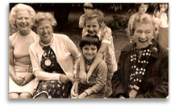
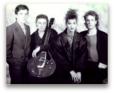
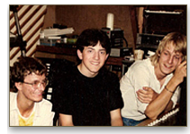
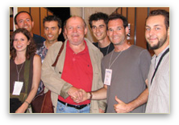
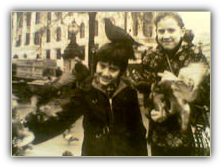
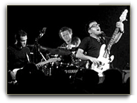

INTERNATIONAL BALLADEER






|
Practically everyone in France has seen the name 'Mark Brenner' on a concert listing. And then there are those in the know... a loyal following that's growing with every show. Mark Brenner was born in Norwich, England. He studied at Norwich School and Wymondham College, before turning-down an opportunity to study Drama at Exeter University. Instead, he opted for music, which resulted in lots of ups and downs with a number of bands, and included a spell as a DJ and nightclub manager. He sold the plane, grabbed his acoustic guitar and began busking in Arcachon and Cap Ferret (two popular seaside resorts). By late September 1995 he realised to his horror that the weather had become pretty much as bad as in his native Britain, and he launched what is probably one of the most unlikely of any international pop singers' careers.
This was followed by an Austrian tour (the first of three), TV appearances, private shows for the British Ambassador in Paris, plus concerts in Portugal and Germany. 2005 was an important year for Mark. In January he released the LUNATIC album, recorded in his home studio and on which Mark played all the instruments. Single-handedly, and without management or a production company's help, Mark has developed his own career path, recording 3 albums to date (one of which was co-produced by Chris Birkett, who produced Sinead O'Connor among many others), developing a loyal and devoted following... a fan base that is kept up-to-date by his web site (www.mark-brenner.com) and by a personal and affectionate contact with the audience, some of which have been known to travel abroad to catch up with the band! Combining a wide range of influences (from pop, rock, jazz and world music), mixing his own excellent songs with a number of carefully-chosen covers, Mark has become a kind of International star within his own chosen circuit. He could have become any number of things, but thanks to his talent and charisma, watching him in action on stage with his superb band of musicians, you can tell he's picked the right vocation. Antoine De Baeke |